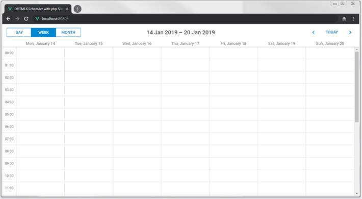
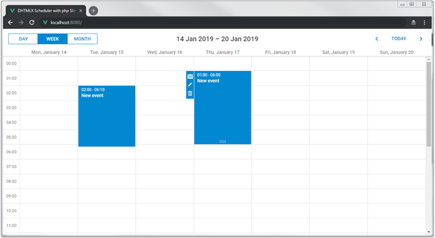

In this tutorial you will find necessary information on how to create a PHP-based Scheduler using Slim 3 Framework and REST API on the server side.
This tutorial uses an older Slim Framework v3.x. If you're looking for the most recent version of the tutorial, check the Slim Framework v4.x guide.
There are tutorials intended for building server-side integration with the help of other platforms and frameworks:
It seems obvious that while developing an application with PHP, one will use a ready framework instead of creating everything from scratch.
We will use the Slim 3 framework together with REST API on the server side and MySQL as a data storage to create a Scheduler. CRUD logic will rely on PDO and will be generic enough to be usable with any other framework.
You can have a look at the ready demo on GitHub. Follow the step-by-step guide to create such an application.
The complete source code is available on GitHub.
We will make use of a skeleton application for the Slim 3 framework.
So you should start with creating an application with the help of Composer:
$ composer create-project slim/slim-skeleton scheduler-slim-howto
$ cd scheduler-slim-howto/
$ composer require illuminate/database "~5.1"
The next step is to add a scheduler on a page. It includes two simple sub-steps, described below.
Create a scheduler.phtml file in the templates templates folder:
templates/scheduler.phtml
<!doctype html>
<html>
<head>
<title> Getting started with dhtmlxScheduler</title>
<meta charset="utf-8">
<script src="https://cdn.dhtmlx.com/scheduler/edge/dhtmlxscheduler.js"></script>
<link href="https://cdn.dhtmlx.com/scheduler/edge/dhtmlxscheduler_material.css"
rel="stylesheet" type="text/css" charset="utf-8">
<style> html, body{
margin:0px;
padding:0px;
height:100%;
overflow:hidden;
}
</style>
</head>
<body>
<div id="scheduler_here" class="dhx_cal_container"
style='width:100%; height:100%;'>
<div class="dhx_cal_navline">
<div class="dhx_cal_prev_button"> </div>
<div class="dhx_cal_next_button"> </div>
<div class="dhx_cal_today_button"></div>
<div class="dhx_cal_date"></div>
<div class="dhx_cal_tab" name="day_tab"></div>
<div class="dhx_cal_tab" name="week_tab"></div>
<div class="dhx_cal_tab" name="month_tab"></div>
</div>
<div class="dhx_cal_header"></div>
<div class="dhx_cal_data"></div>
</div>
<script> scheduler.config.xml_date="%Y-%m-%d %H:%i";
scheduler.init('scheduler_here', new Date(2019,0,20), "week");
scheduler.load("/events", "json");
var dp = new dataProcessor("/events");
dp.setTransactionMode("REST"); // use to transfer data with REST
dp.init(scheduler);
</script>
</body>
</html>
After a new page is added, you need to make it accessible from a browser. Add a route to src/routes.php:
src/routes.php
$app->get('/', function (Request $request, Response $response, array $args) {
return $this->renderer->render($response, 'scheduler.phtml', $args);
});
Now you can run the app to see that a scheduler is rendered on a page:

So, you've got an empty scheduler. It's time to create a database and connect it to our app.
You can create a database from your favorite mysql-client, or via the console. Here is SQL to create a new database with a table for calendar events:
CREATE DATABASE IF NOT EXISTS `scheduler_howto_php`;
USE `scheduler_howto_php`;
DROP TABLE IF EXISTS `events`;
CREATE TABLE `events` (
`id` int(11) AUTO_INCREMENT,
`start_date` datetime NOT NULL,
`end_date` datetime NOT NULL,
`text` varchar(255) DEFAULT NULL,
PRIMARY KEY (`id`)
) DEFAULT CHARSET=utf8;
To import via a mysql-console, create a dump.sql file with the code above. And execute the command below in the shell:
$ mysql -uuser -ppass scheduler < mysql_dump.sql
Open your src/settings.php file, add an array with database settings, and update it with your configurations:
src/settings.php
'pdo' => [
'engine' => 'mysql',
'host' => 'localhost',
'database' => 'scheduler_howto_php',
'username' => 'user',
'password' => 'pass',
'charset' => 'utf8',
'collation' => 'utf8_unicode_ci',
'options' => [
PDO::ATTR_ERRMODE => PDO::ERRMODE_EXCEPTION,
PDO::ATTR_DEFAULT_FETCH_MODE => PDO::FETCH_ASSOC,
PDO::ATTR_EMULATE_PREPARES => true,
],
]
After that go to src/dependencies.php in order to add a PDO instance into the app:
src/dependencies.php
// Inject a new instance of PDO into the container
$container['database'] = function($container) {
$config = $container->get('settings')['pdo'];
$dsn = "{$config['engine']}:host={$config['host']};dbname={$config['database']};
charset={$config['charset']}";
$username = $config['username'];
$password = $config['password'];
return new PDO($dsn, $username, $password, $config['options']);
};
Our scheduler already calls the "/events" URL to retrieve events. Now we can add a handler for that request and populate scheduler with actual data.
Since scheduler will need several different handlers, we'll use route groups of the Slim framework in order to keep them organized.
Open the src/routes.php file, and add a group "/events", and actions into it:
src/routes.php
$app->group('/events', function () {
$this->get('', function (Request $request, Response $response, array $args) {
$db = $this->database;
$queryText = 'SELECT * FROM `events`';
$query = $db->prepare($queryText);
$query->execute();
$result = $query->fetchAll();
return $response->withJson($result);
});
});
Now if you add some events into the database, they will appear in your scheduler.
Currently scheduler loads all records from the events table on startup. It can work well if you know that the amount of data will remain small over time. But when scheduler is used for something like a planning/booking application and you don't delete or move obsolete records to another table, the amounts of data will build up fairly quickly. As a result, in a couple of months of active usage you may find that your app requests a couple of MBs of events each time a user loads the page.
It can be easily avoided by using dynamic loading. Scheduler will add the displayed dates to the request parameters and you'll be able to return only the records that need to be displayed. Each time a user switches to a new data range, scheduler will request a new portion of data.
To enable dynamic loading in UI, you can set the setLoadMode option to any of values: "day", "week", "month". Firstly, enable dynamic loading on the client using the setLoadMode method:
scheduler.config.xml_date="%Y-%m-%d %H:%i";
scheduler.init("scheduler_here", new Date(2019, 0, 20), "week");
scheduler.setLoadMode("day");
scheduler.load("/events", "json");
On the server side it will be processed correctly by this code:
src/routes.php
$app->group('/events', function () {
$this->get('', function (Request $request, Response $response, array $args) {
$db = $this->database;
$queryText = 'SELECT * FROM `events`';
$params = $request->getQueryParams(); $queryParams = [];
if (isset($params['from']) && isset($params['to'])) { $queryText .= " WHERE `end_date`>=? AND `start_date` < ?;"; $queryParams = [$params['from'], $params['to']]; }
$query = $db->prepare($queryText);
$query->execute($queryParams); $result = $query->fetchAll();
return $response->withJson($result);
});
});
For now, scheduler can read data from the backend. Let's make it write changes back to the database.
The client side will work in the REST mode, meaning it will send POST/PUT/DELETE requests for events actions. Check the format of requests and all the routes the scheduler will use.
Now you need to define a controller that handles actions on the model, create route for it and enable data saving on the client side.
Go back to src/routes.php and add a handler for a POST request to the "/events" group, it will handle inserting of new events:
src/routes.php
$this->post('', function (Request $request, Response $response, array $args) {
$db = $this->database;
$body = $request->getParsedBody();
$queryText = 'INSERT INTO `events` SET
`start_date`=?,
`end_date`=?,
`text`=?';
$queryParams = [
$body['start_date'],
$body['end_date'],
$body['text']
];
$query = $db->prepare($queryText);
$query->execute($queryParams);
$result = [
'tid' => $db->lastInsertId(),
'action' => 'inserted'
];
return $response->withJson($result);
});
When a new task is inserted, you return its id back to the client in the tid property of the response object.
The response JSON can have any number of additional properties, they all can be accessed from the client-side handler.
The same way to add an action for a PUT request:
$this->put('/{id}', function (Request $request, Response $response, array $args) {
$db = $this->database;
$id = $request->getAttribute('route')->getArgument('id');
$body = $request->getParsedBody();
$queryText = 'UPDATE `events` SET
`start_date`=?,
`end_date`=?,
`text`=?
WHERE `id`=?';
$queryParams = [
$body['start_date'],
$body['end_date'],
$body['text'],
$id
];
$query = $db->prepare($queryText);
$query->execute($queryParams);
$result = [
'action' => 'updated'
];
return $response->withJson($result);
});
and for a DELETE request:
$this->delete('/{id}', function (Request $request, Response $response, array $args) {
$db = $this->database;
$id = $request->getAttribute('route')->getArgument('id');
$queryText = 'DELETE FROM `events` WHERE `id`=? ;';
$query = $db->prepare($queryText);
$query->execute([$id]);
$result = [
'action' => 'deleted'
];
return $response->withJson($result);
});
Finally, we will configure the client side to utilize the API we've just implemented:
templates/basic.phtml
scheduler.config.xml_date="%Y-%m-%d %H:%i";
scheduler.init("scheduler_here", new Date(2019, 0, 20), "week");
scheduler.setLoadMode("day");
// load data from the backend
scheduler.load("/events", "json");
// send updates to the backend
var dp = new dataProcessor("/events"); dp.init(scheduler);
// set data exchange mode
dp.setTransactionMode("REST");
If you restart the application now, you should be able to create delete and modify events in scheduler, all changes will be there after you reload the page.

In order to enable recurrence (e.g. "repeat event daily") you'll need to add an appropriate extension to the scheduler page:
<script src="https://cdn.dhtmlx.com/scheduler/edge/ext/dhtmlxscheduler_recurring.js" ></script>The "events" table needs additional columns to store recurrence info. Sql-query for creating recurring events table:
CREATE DATABASE IF NOT EXISTS `scheduler_howto_php`;
USE `scheduler_howto_php`;
DROP TABLE IF EXISTS `events`;
CREATE TABLE `events` (
`id` int(11) AUTO_INCREMENT,
`start_date` datetime NOT NULL,
`end_date` datetime NOT NULL,
`text` varchar(255) DEFAULT NULL,
`event_pid` int(11) DEFAULT 0,
`event_length` bigint(20) unsigned DEFAULT 0,
`rec_type` varchar(25) DEFAULT '',
PRIMARY KEY (`id`)
) DEFAULT CHARSET=utf8;
Or, you can update the events table from our previous step:
ALTER TABLE `events` ADD COLUMN `event_pid` int(11) DEFAULT '0';
ALTER TABLE `events` ADD COLUMN `event_length` bigint(20) unsigned DEFAULT '0';
ALTER TABLE `events` ADD COLUMN `rec_type` varchar(25) DEFAULT '';
Finally, you'll need to update our handlers
Firstly, let's take a look at the POST route. Here you need to update the SQL query in order to add new columns.
Secondly, you need to process a special case for recurring events - deletion of a specific occurrence of the recurring series requires creating a new database record and the client will call the insert action for it:
src/routes.php
$this->post('', function (Request $request, Response $response, array $args) {
$db = $this->database;
$body = $request->getParsedBody();
$queryText = 'INSERT INTO `recurring_events` SET
`start_date`=?,
`end_date`=?,
`text`=?,
`event_pid`=?, `event_length`=?, `rec_type`=?'; $queryParams = [
$body['start_date'],
$body['end_date'],
$body['text'],
// recurring events columns
$body['event_pid'] ? $body['event_pid'] : 0, $body['event_length'] ? $body['event_length'] : 0, $body['rec_type'] ];
// delete a single occurrence from recurring series
$resultAction = 'inserted'; if ($body['rec_type'] === "none") { $resultAction = 'deleted';//!
}
/*
end of recurring events data processing
*/
$query = $db->prepare($queryText);
$query->execute($queryParams);
$result = [
'tid' => $db->lastInsertId(),
'action' => $resultAction
];
return $response->withJson($result);
});
The PUT handler requires the same changes in the SQL query.
Additionally, you need to handle a different special case there: when a recurring series is modified, you need to delete all modified occurrences of that series:
src/routes.php
$this->put('/{id}', function (Request $request, Response $response, array $args) {
$db = $this->database;
$id = $request->getAttribute('route')->getArgument('id');
$body = $request->getParsedBody();
$queryText = 'UPDATE `recurring_events` SET
`start_date`=?,
`end_date`=?,
`text`=?,
`event_pid`=?, `event_length`=?, `rec_type`=? WHERE `id`=?';
$queryParams = [
$body['start_date'],
$body['end_date'],
$body['text'],
$body['event_pid'] ? $body['event_pid'] : 0, $body['event_length'] ? $body['event_length'] : 0, $body['rec_type'],//!
$id
];
if ($body['rec_type'] && $body['rec_type'] != 'none') { //all modified occurrences must be deleted when you update recurring series
//https://docs.dhtmlx.com/scheduler/server_integration.html#recurringevents
$subQueryText = 'DELETE FROM `recurring_events` WHERE `event_pid`=? ;';
$subQuery = $db->prepare($subQueryText);
$subQuery->execute([$id]);
}
$query = $db->prepare($queryText);
$query->execute($queryParams);
$result = [
'action' => 'updated'
];
return $response->withJson($result);
});
And finally, the DELETE action. Here we have to check two special cases:
event_pid, it means a user deletes a modified instance of the recurring series. Instead of deleting such a record from the database,
you need to give it rec_type='none', in order for scheduler to skip this occurrence.src/routes.php
$this->delete('/{id}', function (Request $request, Response $response, array $args) {
$db = $this->database;
$id = $request->getAttribute('route')->getArgument('id');
// some logic specific to recurring events support
// https://docs.dhtmlx.com/scheduler/server_integration.html#recurringevents
$subQueryText = 'SELECT * FROM `recurring_events` WHERE id=? LIMIT 1;'; $subQuery = $db->prepare($subQueryText); $subQuery->execute([$id]); $event = $subQuery->fetch(PDO::FETCH_ASSOC);
if ($event['event_pid']) { // deleting a modified occurrence from a recurring series
// If an event with the event_pid value was deleted - it needs updating
// with rec_type==none instead of deleting.
$subQueryText='UPDATE `recurring_events` SET `rec_type`=\'none\' WHERE `id`=?;';
$subQuery = $db->prepare($subQueryText);
$query->execute($queryParams);
$result = [
'action' => 'deleted'
];
$response->withJson($result);
return;
}
if ($event['rec_type'] && $event['rec_type'] != 'none') {//!
// if a recurring series deleted, delete all modified occurrences of the series
$subQueryText = 'DELETE FROM `recurring_events` WHERE `event_pid`=? ;';
$subQuery = $db->prepare($subQueryText);
$subQuery->execute([$id]);
}
/*
end of recurring events data processing
*/
$queryText = 'DELETE FROM `recurring_events` WHERE `id`=? ;';
$query = $db->prepare($queryText);
$query->execute([$id]);
$result = [
'action' => 'deleted'
];
return $response->withJson($result);
});
A recurring event is stored in the database as a single record that can be splitted up by Scheduler on the client side.
If you need to get dates of separate events on the server side, use a helper library for parsing recurring events of dhtmlxScheduler on PHP.
You will find the ready library on GitHub.
dhtmlxScheduler is a client-side component that doesn't have built-in security safeguards for the sake of flexibility. Moreover, the client side only is not able to provide reliable security measures.
It means that the application security is in the responsibility of a backend developer. The most obvious aspects to pay attention to are the following:
SQL injections. All operations done in this example use parameterized SQL queries which should be safe in terms of SQL injections.
XSS attacks. The client side doesn't sanitize neither user input before sending it to the backend, nor server data before displaying it on a page. This example doesn't contain any xss-filtering and you'll have to consider adding it, if you want to use this sample for your app.
If the backend has failed to perform an action, the client side expects it to return the "error" status of an action.
You can do it by adding a middleware that will wrap execution of handlers into a try-catch block and report an error to the client side
if something goes wrong.
A middleware function is defined in the same file where you keep handlers - src/routes.php:
src/routes.php
$schedulerApiMiddleware = function ($request, $response, $next) {
try {
$response = $next($request, $response);
} catch (Exception $e) {
// Reset the response and write an error message
$response = new \Slim\Http\Response();
return $response->withJson([
'action' => 'error',
'message' => $e->getMessage()
]);
}
return $response;
};
And connect it to the route group:
src/routes.php
$app->group('/events', function () {
...
})->add($schedulerApiMiddleware);
On the client side you can capture these errors using the onAfterUpdate event of the dataProcessor:
dp.init(scheduler);
dp.attachEvent("onAfterUpdate", function(id, action, tid, response){
if(action == "error"){
// do something here
}
});
In case you've completed the above steps to implement Scheduler integration with PHP, but Scheduler doesn't render events on a page, have a look at the Troubleshooting Backend Integration Issues article. It describes the ways of identifying the roots of the problems.
Now you have a fully functioning Scheduler. You can view the full code on GitHub, clone or download it and use it for your projects.
You can also check guides on the numerous features of Scheduler or tutorials on integration of Scheduler with other backend frameworks.
Back to top